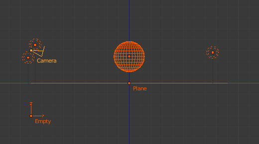
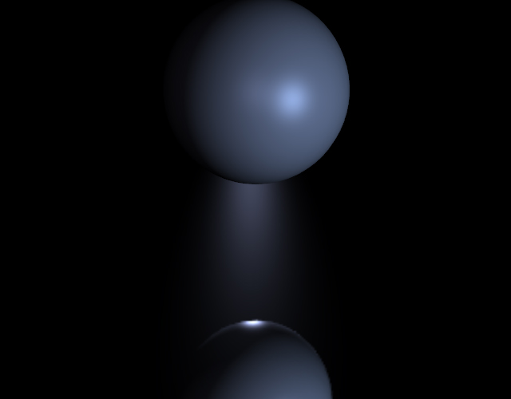
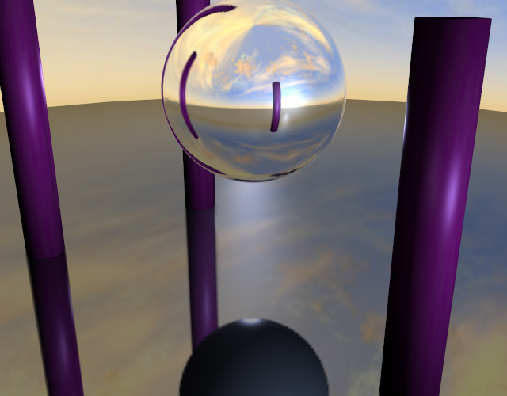
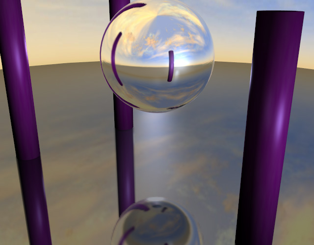

Карти Середовища -- Environment Maps¶
Environment maps take a render of the 3D scene and apply it to a texture, to use for faking reflections. If you want to achieve a very realistic result, ray-traced reflections are a good solution. Environment Maps are another way to create reflective surfaces, but they are not so simple to set up.
Тож, чому слід використовувати Карти Середовища?
- The main reason is probably that they can be much faster than ray tracing reflections. In certain situations they need to be calculated only once, and may be reused like any ordinary texture. You may even modify the precalculated Environment Map in an image editor.
- Environment maps can also be blurred and render even faster because the resolution can then be lowered. Blurring a reflection with the ray tracer always adds to the render time, sometimes quite a lot.
- Halos (a visualization type for particles) are not visible to ray-traced reflections, so you need to setup environment maps to reflect them.
- Keypoint strands (another visualization type for particles) are also not visible to ray-traced reflections, so you need to setup environment maps to reflect them.
Так само, як ми рендеримо світло, що досягає площини огляду, використовуючи камеру для визначення точки зору, ми рендеримо світло, що досягає поверхні об'єкта (і звідси, таке світло, що може зрештою бути відбите у напрямку камери). Розкладання середовища у Blender'і рендерить зображеннєву кубічну карту сцени у шістьох кардинальних напрямках з будь-якої точки. Коли ці шість плиток зображення розкладаються на об'єкт за допомогою уводу координат Reflection, то вони створюють ту візуальну складність, яку очі очікують бачити від блискучих відбиттів.
Ghi chú
Корисно тут згадати, що справжня мета цієї техніки -- правдоподібність, а не точність. Очі не потребують фізично точного імітування проходження світла; потребується лише переконання того, що сцена є реальною, за допомогою візуальної складності, яку вони очікують побачити. Найбільш неправдоподібною річчю для більшості рендерених зображень є стерильність, а не неточність.
Опції¶
Quan trọng
For correct results, the mapping of an environment map texture must be set to Reflection (reflection coordinates) in the Map Input panel of the Material tab.
Устави Карти Середовища для відбивання від площини.
Blender надає три типи карт середовища, як ви можете побачити та Ілюстрації Устави Карти Середовища для відбивання від площини.:
- Статично -- Static
- Карта обчислюється тільки один раз у ході анімації або після завантаження файлу.
- Анімовано -- Animated
- Карта обчислюється кожен раз при здійсненні рендерингу. Це означає, що рухомі об'єкти показуються коректно у дзеркальних поверхнях.
- Файл Зображення -- Image File
Коли карти середовища збережені як файли зображення, то вони можуть завантажуватися з цих файлів. Це дає найшвидший рендеринг за допомогою карт середовища, а також надає здатність модифікувати або використовувати таку карту середовища у зовнішній програмі.
Коли використовуються планарні відбиття, якщо камера є єдиним рухомим об'єктом і ви маєте площину відбивання, то порожняк Empty повинен рухатися також і ви повинні використовувати тип карти середовища Animated. Якщо об'єкт відбивання є маленькими та порожняк Empty знаходиться в його центрі, то тип карти середовища може бути Static, навіть якщо цей об'єкт сам обертається, але Порожняк не рухається. Якщо, з іншого боку, такий Об'єкт пересувається, то порожняк Empty повинен слідувати та тип карти середовища повинен бути Animated.
- Спеціальне -- Specials
- Зчистити Карту Середовища -- Clear Environment Map
- Зчищає поточно рендерену карту середовища з пам'яті. Це корисно для освіження кар середовища типу Static, коли ви змінили певні речі у вашій сцені з моменту останнього рендерингу карти середовища. Карти середовища типу Animated роблять це автоматично при кожному рендері.
- Зберегти Карту Середовища -- Save Environment Map
- Зберігає поточно утримувану у пам'яті статичну карту середовища у файл зображення на диску. Така збережена карта може бути завантажена знову за допомогою Load.
- Зчистити Усі Карти Середовища -- Clear All Environment Maps
- Робить це ж саме, що й Clear Environment Map, але для усіх карт середовища у сцені. Це корисний засіб при використанні рекурсивних карт середовища (коли Depth є більшою за 0).
Ghi chú
Обчислення Карт Середовища може бути вимкнуто на глобальному рівні стягом Environment Map на панелі «Відтінення» -- Shading у вкладці «Зображ» -- Render.
- Об'єкт Точки зору -- Viewpoint Object
Карти середовища створюються з перспективи визначеного об'єкта. Локація цього об'єкта буде визначати, наскільки «коректно» виглядатимуть відбиття, хоча потрібні різні локації для різних поверхонь відбивання. Зазвичай, як такий об'єкт використовується порожняк Empty:
- Для планарних відбиттів об'єкт повинен бути у локації, дзеркаленій від камери на іншому боці від площини відбиття (дивіться Приклади). Це найбільш точне використання карт середовища.
- Для сферичних відбиттів об'єкт повинен бути у центрі сфери. Загалом, якщо центральна точка об'єкта сфери відбивання є у центрі його вершин, то ви можете просто використати ім'я фактичного об'єкта сцени як Viewpoint Object
- Для нерегулярних відбиттів немає жорсткого та швидкого правила, ви можливо необхідно буде поекспериментувати та надіятися, що неточність не матиме значення.
- Ігнорувати Шари -- Ignore Layers
Це шари, що будуть виключені з процесу створення карти середовища. Оскільки, карти середовища працюють, рендерячи сцену з локації об'єкта точки зору Viewpoint Object, то вам необхідно виключити фактичну поверхню відбивання із карти середовища, інакше вона буде загороджувати інші об'єкти, що повинні бути відбиті на самій цій поверхні.
Наприклад, якщо ви рендерите карту середовища із центру сфери, то все, що буде стандартно показувати ця карта середовища, знаходитиметься всередині цієї сфери. Вам необхідно перемістити цю сферу на окремий шар, потім виключити цей шар з рендера карти середовища, так щоб ця карта середовища показувала (і, звідси, відбивала) усі об'єкти поза цією сферою.
- Роздільність -- Resolution
- Роздільність рендера кубічної карти середовища. Вищі значення роздільності дадуть чіткішу текстуру (відбиття), але уповільнять рендеринг.
- Глибина -- Depth
- Кількість рекурсивних рендерів карти середовища. Якщо у сцені є одночасно кілька об'єктів відбивання, що використовують карти середовища, то деякі з них можуть виглядати суцільними, ніби вони не мають рендері відбиття один одного. Щоб показати відбиття у межах відбиттів, такі карти середовища необхідно зробити одночасно кілька разів, рекурсивно, так щоб ефекти з однієї карти середовища могли бути видимими на іншій карті середовища. Дивіться Приклади.
- Відсікання Старт/Кінець -- Clipping Start/End
- Границі відсікання віртуальної камери при рендерингу карти середовища. Задають мінімальну та максимальну відстань від камери того, що буде видно на такій карті.
Відбір Карти Середовища -- Environment Map Sampling¶
Відбір Карти Середовища -- Environment Map Sampling.
- Фільтр -- Filter
- Коробка -- Box
- Коробковий Фільтр
- EWA
Еліптичне Виважене Усереднення -- Elliptical Weighted Average. Один з найбільш ефективних прямих алгоритмів згортання, розроблений Полом Хекбертом -- Paul Heckbert та Недом Гріном -- Ned Greene у 1980-х. Для кожного текселя EWA вибирає, виважує та акумулює текселі у межах еліптичного сліду і далі ділить результат на суму вагомостей.
- Ексцентриситет -- Eccentricity
- Максимальний ексцентриситет (вищі значення дають менше розмиву на віддалених/похилих кутах, але уповільнюють обробку)
- FELINE
FELINE (Fast Elliptical Lines -- Швидкі Еліптичні Лінії) використовує кілька ізотропних проб у кількох точках уздовж лінії у просторі текстури для продукування анізотропного фільтру з метою скорочення артефактів ступінчатості без значного збільшення часу рендерингу.
- Проби -- Probes
- Максимальна кількість вибірок (вищі значення дають менше розмиву на віддалених/похилих кутах, але уповільнюють обробку)
- Область -- Area
- Ексцентриситет -- Eccentricity
- Максимальний ексцентриситет (вищі значення дають менше розмиву на віддалених/похилих кутах, але уповільнюють обробку)
- Розмір Фільтра -- Filter Size
- Величина розмивання, застосованого до текстури. Вищі значення будуть розмивати карту середовища для імітування розмитих відбиттів.
- Мінімум Розміру Фільтра -- Minimum Filter Size
- Використовує Filter Size як мінімальне значення фільтрування у пікселях.
Приклади¶
У цьому прикладі порожняк Empty використовується як Viewpoint Object карти середовища площини відбивання. Він розміщений у дзеркальні позиції від камери відносно площини відбивання. (Це можливо, строго кажучи, тільки для планарних поверхонь відбивання). Ідеально, локація порожняка буде дзеркалити локацію камери через площину полігону, на якій відбуватиметься розкладання.

Приклад планарного відбивання. |

Сфера на площині відбивання. |
Наступні ілюстрації показують ефект устави Depth. Перший рендер має значення «Глибина» як 0. Це означає, що карта середовища на площині рендерена перед картою середовища сфери, а тому відбиття сфери не показуються. Збільшення Depth дає рекурсивний рендеринг цієї карти середовища, щоб отримати відбиття від відбиття.

Відбивання сфери на площині відбивання. |

Відбивання сфери на площині відбивання з одночасно кількома відбиттями. |
Обмеження¶
Оскільки карти середовища обчислюються з точної локації центру об'єкта точки зору Viewpoint Object, а не з фактичної поверхні відбивання, то вони можуть часто бути неточними, особливо для сфер. На наступній ілюстрації прямокутна призма та маленька сфера торкаються боків великої сфери, але оскільки карта середовища обчислюється від центру сфери, то ці навколишні об'єкти виглядають неприродно далеко.
Неточне сферичне відбивання, забарвлені об'єкти неприродно далеко зсунуті.